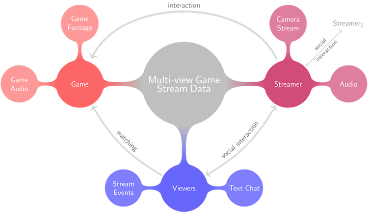
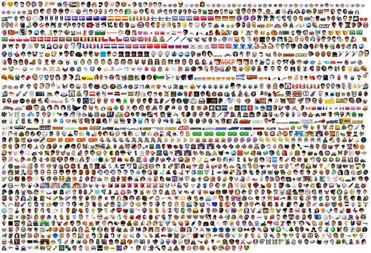

Topics: Machine Learning, Data Gathering. Audience: Knowledgeable.
Seeing as I have built this blogging platform on my website it seems only fitting to fill it. That said, I don’t plan to blog often and if my previous blogs are anything to go by this will be blog 1 of 2, but I digress. My research is into modelling video game lives streams, e.g. Twitch.tv. For those of you to who Livestreaming is a new term let me briefly explain. Livestreaming describes a paradigm where the events being broadcast are occurring live (as in live TV) and accessible through the internet. In the video game livestreams world a particular layout is common, where the broadcaster (streamer) broadcasts their game screen with an overlay of their webcam. Streamers then play their game while providing commentary to the viewers. Viewers then interact with the streamer (and other viewers) by posting messages in an open chat, where the streamer can read and respond to the messages.
A streamer (P4wnyhof) playing Player Unknown’s Battlegrounds
So, why study streamers?
Livestreams have many many compelling reasons to study them. Here are a few which are most interesting for my research:
Livestreams are really popular and only getting more popular. A quick check of TwitchTracker shows that there is an average of 1.26 million concurrent viewers watching 48.3 thousand streams. That is huge when you consider that on average Fox News (the largest cable TV channel in the US) draws 1.89m average and ESPN (the 4th largest) draws just 1.08m. When you compare Twitch as a whole to US cable TV it would be the 4th largest channel. For a website which primarily contains people sat playing games this is incredible in my opinion. This also means there is practically infinite data being generated by the site (infinite as in there is so much we cannot really process it all) - about 131 years of footage is generated each day. Twitch is not alone either, there are numerous other services such as Mixer and YouTube Gaming.
Audio Visual models of Player Experience may be possible. For me, one of the most exciting reasons to study livestreams is because it offers a really rare opportunity to capture player experience through Audio Visual data. Because a typical stream consists of a streamer broadcasting a feed of their game screen as well as their face we can, potentially, build models of player experience based on this data. Now, this is not an easy feat because the data is very noisy (I will go into more details about this is the next section and is a large part of my ongoing PhD research). These models, along with the abundance of streamers, can be used to inform developers about how their games are being received, which parts players are enjoying etc. It is important to note here that others have provided data in similar forms, like the Platformer Experience Dataset, but these are often generated in Lab environment and tend to be relatively small so may not generalise to wild data.
It can help further various Machine Learning fields More details will be provided in the next section but simply put video data is noisy and difficult to deal with. It provides data in a very ‘real-world’ setting, which is unlike a lot of the data sets currently out there which contain data gathered in controlled lab environments. If the challenges in this paradigm can be overcome we have the potential to make a serious contribution to wider fields such as Computer Vision or Affective Computing. While lab gathered data provides a clean data source for developing and testing modelling often this modelling does not generalise well to real-world data. Therefore livestreams offer abundant real-world data which, is utilised, can help develop generalisable and robust models.
It is not just about the streamers. So far I have mostly talked about the streamers. However, there is a lot more going on in a stream than just a streamer playing a game in isolation. For a start, there is a chat feature where viewers can write messages to each other and the streamer. This adds a really interesting dynamic to streams as not only do we have a player interacting with a game, we also have a player interacting with viewers, viewers interacting with the streamer, viewers interacting with each other, and viewers interacting with the game (by commenting on it). Add into the mix streams where there is more than one streamer or in multiple player games where the streamer is communicating with others via voice chat and you end up with a huge soup of organic human interaction and behaviour.
A map of the interactions in a stream
Data is hard
Hopefully, the above arguments have convinced you that studying video game streams has huge potential with implications not just in player experience modelling but also behaviour, emotion, and interaction modelling. However, it is not all plain sailing, stream data can be very difficult to work with as I will outline here:
‘Don’t learn from pixels’ is a saying I have heard from a few researchers and honestly it is pretty good advice. Pixels are very difficult to learn from because they are highly dimensional, sometimes redundant and strongly spatially related. Of course, an entire field of Machine Learning, Computer Vision, exists to study these sorts of models but still, I felt it worth mentioning that by default the data type we are working with here is challenging, even before we consider the host of complicating factors below.
Many streamers use overlays on their game scene to advertise various sponsors or to personalise their look. However, it is possible that these overlays could hide vital gameplay information and thus making understanding what the player is doing in the game hard. On top of this often there are pop-ups that appear on screen e.g. when somebody subscribes to the channel. These all add an extra level of noise to the visual data and occlude important information.
As well as game scene occlusion through overlays, modelling the streamer through the webcam is extremely difficult. There is no set camera angle for streamers to use meaning that different streamers will have there webcam in different locations - some may have a front facing camera, others may have it off to the side etc. Pose estimation is already a challenging area of Computer Vision and, in our case, not only must an algorithm learn estimate of the streamers facial pose it must also extract some salient features e.g. the streamers affect or play experience. Additionally, every streamer has a varying level of lighting in their set-up and this can even change during a stream as the level of daylight changes across long streams.
Just like the video feed, the audio stream is also very noisy. Audio is, at best, a combination of the streamers speech and the game audio as a single stream. At worst it also contains music, if the streamer is listing to any, and the voice of other gamers, e.g. in a multiplayer setting. Additionally, each streamer will use a different audio mix between their game audio, their microphone, and any music they are listening to further adding complications.
Chat is a special beast
You may have noticed that in the above section makes no mention of chat. That is because I felt it needed its own section given what a challenge it is. Traditionally Natural Language Processing is focused on ‘proper’ English, e.g. Open AI’s headline-grabbing language model GPT-2. However, in a setting such as ours, we do not have the luxury of ‘proper’ English. In fact, Twitch chat is a very unique form of communication. Largely, communication occurs through the use of emoticon, emoji, emotes, and ASCII art (all variations of a common theme - communicating with images rather than words). In fact, in our data, we have found that the most common ‘word’ (token) is “lul” which, when sent on Twitch, actually takes the form of an emote. Furthermore, this communication is inherently temporal in that messages are sent in response to what the streamer is saying, what is occurring in the game, or other viewers. This is very different from the more commonly studied areas of NLP such as the language model work mentioned above. Emotes are also loaded with meaning despite being a single token. For instance, it is often common for emotes to constitute part of the identity of a streamers viewer community. This can manifest itself in many ways, e.g., emotes can act as a pseudo-shibboleth, identifying viewers as either ‘in’ the community or outside of it. My aim is to examine chat next as it is an area of stream data that I have not currently focused on and is arguably the most difficult to model due to it being so unlike the data used in the existing literature.
A small selection of some of the twitch specific emotes avalaible
In closing
I hope this short blog post has shown you why studying livestreams is so attractive and exciting. Granted it is an extremely difficulty paradigm but in part that is what makes it so interesting to study - not only can advances in modelling livestreams help the video games research community it has the potential to have farther reaching implications. It is my hope and goal that through a collaborative effort from a range of disciplines, e.g. Games research, Computer Vision, Natural Language Processing, Affective Computing, we can begin to address some of the challenges outlined above and make progress on modelling this unique data source.